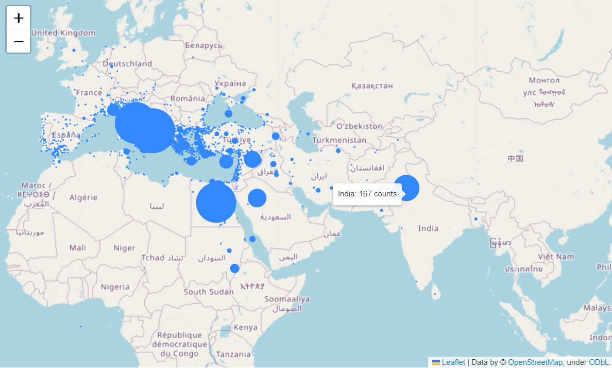
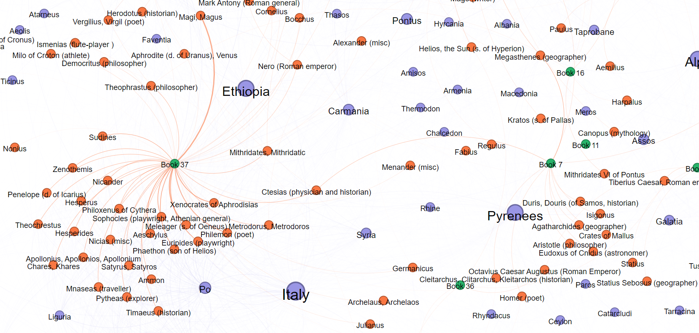

| Total_length | Place_count | Place_freq | |
|---|---|---|---|
| Book | |||
| 1 | 2778 | 1 | 0.000360 |
| 2 | 30570 | 406 | 0.013281 |
| 3 | 18037 | 1007 | 0.055830 |
| 4 | 15434 | 1309 | 0.084813 |
| 5 | 18872 | 1112 | 0.058923 |
| 6 | 27891 | 1012 | 0.036284 |
| 7 | 21204 | 225 | 0.010611 |
| 8 | 24176 | 185 | 0.007652 |
| 9 | 19197 | 140 | 0.007293 |
| 10 | 20816 | 121 | 0.005813 |
| 11 | 27345 | 77 | 0.002816 |
| 12 | 13906 | 188 | 0.013519 |
| 13 | 13243 | 164 | 0.012384 |
| 14 | 15277 | 189 | 0.012372 |
| 15 | 14552 | 135 | 0.009277 |
| 16 | 25442 | 180 | 0.007075 |
| 17 | 29387 | 82 | 0.002790 |
| 18 | 35850 | 222 | 0.006192 |
| 19 | 18822 | 146 | 0.007757 |
| 20 | 22743 | 21 | 0.000923 |
| 21 | 17896 | 95 | 0.005308 |
| 22 | 16491 | 24 | 0.001455 |
| 23 | 15764 | 17 | 0.001078 |
| 24 | 17491 | 56 | 0.003202 |
| 25 | 16734 | 85 | 0.005079 |
| 26 | 15448 | 35 | 0.002266 |
| 27 | 12444 | 40 | 0.003214 |
| 28 | 26476 | 28 | 0.001058 |
| 29 | 13976 | 31 | 0.002218 |
| 30 | 14395 | 23 | 0.001598 |
| 31 | 12204 | 222 | 0.018191 |
| 32 | 14635 | 76 | 0.005193 |
| 33 | 17946 | 113 | 0.006297 |
| 34 | 18972 | 193 | 0.010173 |
| 35 | 21283 | 277 | 0.013015 |
| 36 | 21295 | 357 | 0.016764 |
| 37 | 22255 | 282 | 0.012671 |
Mapping India in Pliny the Elder’s Natural History
Abstract
This study examines Pliny’s Natural History from a spatial perspective, focusing on the content relating to India and incorporating the digitised and annotated text available in the TOPOSText project. The research employs a variety of methodologies, including word frequency and collocation analysis, topic modelling and network analysis, with an integration of close reading practices.
The multifaceted role that India plays in the narrative is highlighted in the study’s findings. It emerges not only as a geographical counterpart and repository of precious treasures, but also as an important trading partner of the Roman Empire and the Mediterranean, a context closely related to Pliny’s Stoic perspective on the natural world. In addition, the creation of a network map linking place and person names associated with India highlights the clustering of historical figures in the content structure.
1 Introduction
1.1 Natural History and its complexity
Pliny the Elder’s Natural History is widely recognized as the earliest encyclopedia in the world, manifesting a pioneering effort in comprehensively cataloguing the vast array of human knowledge from that era.
The work is thematically divided into 37 books, covering a diverse range of subjects including astronomy, geography, zoology, botany, medicine, and more. Pliny meticulously consulted a wide range of Greek and Roman references, totalling approximately 2,000 volumes1, and interwove his own literary interpretation or comments to the narratives.
Despite the carefully designed knowledge-ordering framework (Lao 2016), scholars have observed a paradoxical complexity in Natural History, evident in its linguistic style, narrative approach, and use of references. The work compiles variant toponyms from Greek and Latin, includes digressions in descriptions (Roller 2022), and exhibits changes in vocabularies and sentence structures (Pinkster 2005). However, it is precisely this complexity that makes the work more fascinating and not only a valuable source of the knowledge and worldview of the ancient world, but also a gateway into Pliny’s conceptualization, imagination, and even the prevailing imperial ideology of that time.
The complexity and interconnectivity of the general structure of Natural History are further highlighted in different aspects by refreshing approaches. For the content organisation, Healy (1999) advocated Pliny’s original contribution in revealing the technology and science engagement of the Rome Empire. Taking the historical, political and linguistic context into consideration, he found that in addition to providing informative descriptions of natural phenomena and scientific experiments, Pliny also developed the scientific language in Latin through his work. Moreover, Naas (2002) discussed how Pliny formulated the diverse materials into his encyclopaedic structure, revealing the work’s multifaceted nature as an epistemological, ideological, and moral project. Analysing Pliny’s employment of the historical exemplum in the work, Schultze (2011) argued how that literary device directed and teased the readers as well as established a profound connection between human beings and the entire spectrum of nature in Natural History.
In addition to the contextual and referential analyses of Natural History, Rydberg-Cox (2021) employed network analysis techniques, applying various metrics to illustrate the connections between Pliny’s sources and the topics discussed in the work. Furthermore, Fantoli (2022) conducted a comparative examination of book 2 of Natural History and book 7 of Seneca’s Natural Questions, both focused on astronomy as part of the Latin classics about nature. Statistical methods were applied to investigate variations in their discursive distribution, effectively identifying Pliny’s distinctive stylistic attributes. Moreover, the encyclopaedic authorial intent evident in Natural History is validated through correspondence and tree analysis. These studies collectively showcase how distant reading methodologies offer novel insights into our understanding of ancient treatises.
1.2 Spatial perspective in Natural History
As pointed out by Beagon (2011), differentiating from his predecessors, Pliny showed a “terrestrial curiosity” in Natural History, emphasising recognition of the physical, material world. In this regard, the vision of geography plays a pivotal role in distributing information, knowledge, and events throughout Natural History.
Drawing from the long-established topographical and ethnographic traditions, Pliny seamlessly connects volumes dedicated to geography (books 3-6) with broader elements, activities, and cultural, historical, and societal contexts(Roller 2022), exemplified in his portrayal of exotic plants, communities’ habitats, imperial expeditions, and trade products. In other words, geographical names that occurred in each book of Natural History served as signposts guiding readers through diverse lands, shedding light on how Pliny and his contemporaries perceived and conceptualized the world around them.
A normalized frequency of place name occurrence in the work is calculated as the ratio of counts of the occurrences of place names in each book to the word lengths of the book (Table 1). The bar chart (Figure 1) depicts the comparison of the distribution of place names in the books of Natural History. The process of data collection and structuring for this table and chart is further explained in the Methodology chapter (Section 3).
The observation aligns with the content structure of Natural History, that books 3-6 centred around the themes of “geography and ethnography”, contain the most mentions of location names, and place names are also frequently mentioned in books about agriculture and horticulture (book 12-14), aquatic life (book 31), and mining and mineralogy (book 34-37).

1.3 Text source for the study
Natural History is originally in Latin. For the purpose of this study, an English translation by Henry T. Riley (1816-1878) and John Bostock (1773-1846), first published in 1855, is utilized. The translated text is obtained in a digitised version from the TOPOSText project, having been sourced from the Perseus Project and governed by a Creative Commons Attribution-Share-Alike 3.0 U.S. License.
Annotations of proper names, place names and their corresponding coordinates are available together with the text of Natural History (Book1-11, Book12-37) on TOPOSText project. This invaluable resource allows for creating a dataset that includes both the textual contents and geographical annotations, which can be utilized to investigate the distribution of place names in the entire work and examine the frequencies and patterns of geography-related content.
The extension of the extracted corpora and the workflow of the extraction will be further explained in the Methodology chapter (Section 3).
2 Research Question
2.1 Prominent mentioned places in Natural History
Based on the geographical annotations in Natural History provided by the TOPOSText, there are 2052 unique places mentioned in Natural History.
The Table 2 lists the top 22 most frequently mentioned place names, which collectively represent approximately 1% of the total mentions. This count includes instances where multiple place names share the same frequency as the 20th rank.
| ToposText_ID | Place_Name | Lat | Long | Count | |
|---|---|---|---|---|---|
| 0 | http... | Italy | 40.6000 | 16.3... | 292 |
| 1 | http... | Rome | 41.8910 | 12.4... | 269 |
| 2 | http... | Egypt | 27.1000 | 30.7... | 261 |
| 3 | http... | India | 30.0000 | 74.0... | 167 |
| 4 | http... | Arabia | 28.0000 | 40.0... | 123 |
| 5 | http... | Syria | 35.5000 | 39.0... | 109 |
| 6 | http... | Cyprus | 35.0000 | 33.0... | 85 |
| 7 | http... | Nile | 30.0918 | 31.2... | 85 |
| 8 | http... | Alps | 44.1420 | 7.34300 | 82 |
| 9 | http... | Sicily | 37.6000 | 14.5... | 71 |
| 10 | http... | Crete | 35.2052 | 25.1... | 64 |
| 11 | http... | Ethi... | 13.0100 | 35.0... | 58 |
| 12 | http... | Rhodes | 36.4408 | 28.2... | 56 |
| 13 | http... | Athens | 37.9718 | 23.7... | 56 |
| 14 | http... | Capitol | 41.8933 | 12.4... | 52 |
| 15 | http... | Euph... | 35.2791 | 40.2... | 47 |
| 16 | http... | Pontus | 43.5000 | 33.5... | 47 |
| 17 | http... | Camp... | 41.1000 | 14.6... | 46 |
| 18 | http... | Armenia | 39.7020 | 44.2... | 45 |
| 19 | http... | Red Sea | 19.5000 | 39.0... | 42 |
| 20 | http... | Cart... | 36.8500 | 10.3... | 42 |
| 21 | http... | Cilicia | 37.0100 | 34.0... | 42 |
The place names mentioned in Natural History are geographically mapped, with each location marked on the map by its corresponding coordinates. A dot is assigned to each place, with the size of the dot reflecting the frequency of its mention in the work. The larger the dot, the more frequently the place is mentioned in Natural History.
An interesting observation from the output, as shown in Figure 2, is that India, despite being outside the Mediterranean, receives a high frequency of mention.

2.2 Why India?
Geographically, India seems a distant and disconnected territory from the Roman Empire, lacking any direct aquatic or land routes with the Mediterranean region. However, the exotic curiosity Pliny attempted to integrate within his work, and the history of the Indo-roman trade relations, can be regarded as a broader context for the prominent mentioning of India in Natural History.
As suggested by (Murphy 2003), the mirabilia, encompassing accounts of extraordinary landscapes, people, plants, and animals, assumes a substantial proportion within the books of Natural History. Pliny’s inclusion of such exotic elements not only catered to the prevailing curiosity of his Roman readers but also fostered a comparative perspective between distant locales, exemplified by his references to India, and their natural counterparts within Rome (Naas 2011). Within a research framework of Roman Imperialism, the detailed portrayal of foreign lands, such as India, holds significant importance in shaping both Pliny’s and his contemporary Roman readers’ perception of their place within the global landscape (Pollard 2009).
In addition, Natural History serves as a valuable reference for tracking the Indo-Mediterranean network of exchange (Pollard 2009). Through the depiction of cities, ports, and rivers along the trade routes, the work provides substantive evidence of the flourishing trade relations between the Roman Empire and the Indian subcontinent (Neelis 2011). The extensive exemplification of diverse commodities, such as gemstones, glass, spices, textiles, plants, and wine, along with the accounts of the currency sestertii involved in the merchandise exchange in the work shed lights to the compelling details and social and cultural implications of this long-distance trade (Székely 2006; Pollard 2009). Furthermore, the direct criticisms regarding the high cost of the luxury items imported from India imply both the magnitude of the trade volume and Pliny’s stance towards this commercial interaction (Neelis 2011).
3 Methodology
3.1 Workflow
The workflow for this study involves the following key stages:
Data Collection:
As mentioned in the Introduction chapter (Section 1), the text employed for this study is obtained from the digitised English translation (by Henry T. Riley (1816-1878) and John Bostock (1773-1846)) of Pliny’s Natural History available on TOPOSText project.
The two parts of Natural History (Book1-11, Book12-37) are scraped for their the textual contents together with the geographical annotation of the mentioned ancient places, and their book, chapter and paragraph positions with the function provided in Beautiful Soup library of Python.
Data Preprocessing:
The information extracted from the HTML file is structured into separate columns as Pandas dataframe, a dataframe for plain text of the entire work, and a dataframe for geographical-related text in Natural History with the geographical annotations are generated and stored in CSV format.
After a preliminary exploration, the research focus is narrowed down to India-related text in Natural History. Referring to the geographical territories in the scope of ancient Greek and Roman world (Talbert 2000b), a dataframe for India-related text is filtered from the abovementioned dataframe for geographical-related text with the range of corresponding coordinates of Indian subcontinent in the era of Natural History. The flitered India-related text dataframe is also stored in CSV format.
The location names mentioned in the India-related text were checked manually for its completeness. The identified location names without annotation in TOPOSText were appended to the India-related text dataset.
Additionally, the textual contents in the datasets were preprocessed with tokenization, lemmatization and the exclusion of stop-words processes.
Data Analysis:
In the preliminary exploration, statistical analysis is used to give an overview of the distribution of place names in each book (shown in Table 1 and Figure 1) and to compare the occurrence frequencies of different places (shown in Figure 2) in the work. This leads to a focused study of India-related texts.
In the analysis of the India-related text (the target corpus) in Natural History, three distant reading methods are employed:
Word frequency and collocation analysis: single word frequency and bi-gram collocation of the target corpus are measured with the functions in NLTK package for an overview of the common word patterns relating to India in Natural History.
Topic modelling: Genism library is used for semantic vectorization and implemetion of Latent Dirichlet Allocation (LDA) model for the topic modelling of the target corpus, and the library of pyLDAvis is utilized for an interactive visualisation. The output of this method shows the potential topics in the India-related text in Natural History.
Network analysis for named entities: Person names mentioned in the India-related text are retrieved from annotaions on TOPOSText. Person and place names occured in the target corpus are extracted as nodes together with the book numbers where it is mentioned, and the co-occurence between the nodes are counted as edges for network analysis. The output of this method is a graph showing the clusters of the nodes in the target corpus, indicating the structure of the content related to India in Natural History.
In addition to the above methods, traditional close reading is also employed to enrich the discussion. This integration helps to complement the results obtained through distant reading and facilitates the interpretation of findings within the context of the work.
Interpretation and Conclusion:
The workflow and parameter setting of each research method are explained at the beginning of each analysis section. The results aquired from each method are interpreted with a dialouge to the broader literature and close reading of the related text.
In the Conclusion chapter (Section 5), the findings are illustrated comprehensively as a response to the research questions. And the limitations of the methods are discussed and evaluated.
3.2 Data preparation
This section provides an overview of the data preparation process, encompassing four sub-sections: HTML scraping from TOPOSText, creation of a filtered dataset of “India-related text,” completeness check and preprocessing of textual data. The tools and procedures employed in data collection and dataset generation for the study are introduced in the subsequent content.
3.2.1 HTML scraping from TOPOSText
As previously stated, the textual contents of Pliny’s Natural History are available on the TOPOSText project, presented in two distinct parts: Book 1-11, Book 12-37, both of which are in HTML format.
To extract the relevant data, the Beautiful Soup tool, a Python library renowned for parsing HTML and XML documents, was employed.
The text in the HTML documents is organised into paragraphs, each uniquely identified by an “id” attribute that specifies its corresponding book, chapter, and paragraph number. For instance, a typical paragraph has an “id” tag as follows:
<p id=‘urn:cts:latinLit:phi0978.phi001:3.9.7’>
The textual contents are retrieved with the information from these “id” attributes and structured as a reference dataset, comprising the plain text of Natural History divided into paragraphs, with each paragraph assigned a unique identifier, and separate columns indicating its book, chapter, and paragraph number. An illustrative example of the dataset’s structure is shown as Table 3.
| UUID4 | Reference | Book | Chapter | Paragraph | Text | |
|---|---|---|---|---|---|---|
| 0 | e9e67565-bb... | urn:cts:lat... | 1 | 1 | 1.0 | PREFACE IN ... |
| 1 | 010b853d-b8... | urn:cts:lat... | 1 | 2 | 1.0 | But who cou... |
| 2 | 2d10e332-9c... | urn:cts:lat... | 1 | 3 | 1.0 | But if Luci... |
| 3 | 113e0b4c-5b... | urn:cts:lat... | 1 | 4 | 1.0 | My own pres... |
| 4 | 19115032-9f... | urn:cts:lat... | 1 | 5 | 1.0 | For my own ... |
There are a total of 3493 paragraphs in the English-translated version of Natural History used in this study. The extracted text contains 343096 tokens and 28606 types after preprocessing. This reference dataset has been saved in CSV format for record.
Moreover, the geographical annotations concerning the ancient places mentioned in the text are labelled with a class attribute denoted as “place”, including a URI for the location, the place name and its corresponding coordinates, exemplified by the following HTML code snippet:
<a about=“https://topostext.org/place/419125LPal” class=“place” lat=“41.8896” long=“12.4884”>Palatine</a>
All annotations under the “place” class are extracted, and the URI, name, geographical coordinates, textual content and the book/chapter/paragraph number of each place are structured into the dataset for geographical-related text in Natural History. An example of this dataset is shown in Table 4 for reference.
| UUID4 | ToposText_ID | Place_Name | Reference | Lat | Long | Book | Chapter | Paragraph | Text | |
|---|---|---|---|---|---|---|---|---|---|---|
| 0 | bf12... | http... | Academy | urn:... | 37.9920 | 23.7070 | 1 | 8 | 1.0 | For ... |
| 1 | f782... | http... | Pala... | urn:... | 41.8896 | 12.4884 | 2 | 5 | 1.0 | For ... |
| 2 | a0f9... | http... | Esqu... | urn:... | 41.8950 | 12.4960 | 2 | 5 | 1.0 | For ... |
| 3 | b8d8... | http... | Capitol | urn:... | 41.8933 | 12.4830 | 2 | 5 | 1.0 | For ... |
| 4 | f81b... | http... | Rome | urn:... | 41.8910 | 12.4860 | 2 | 6 | 3.0 | Belo... |
According to the geographical annotations of the ancient places occurred in Natural History, there are 5595 occurrences of place names in book 1-11 and 3281 in book 12-37, adding up to a combined total of 8876 annotated places throughout the work. The geographical-related text in Natural History contains 199507 tokens and 23937 types after preprocessing. This dataset including place names and their textual context in Natural History is saved in CSV format for record.
3.2.3 Data completeness check
The paragraphs extracted from the India-related text dataset undergo manual verification for the completeness of Indian place name annotations. Each distinct paragraph in the dataset is individually extracted and stored in TXT format as separate files within a corpus folder. The file names contain information about the book, chapter, and paragraph numbers.
There are in total 146 distinct paragraphs mentioning Indian places in Natural History according to the annotations on TOPOSText.
An example of the exported file name can be referred as follows:
Exported india_corpus\37.77.1_text.txtThe text files are uploaded to Recogito platform, which offers a semantic annotation tool and automatic geographical annotation suggestions from its supported gazetteers. This process aims to find Indian place names mentioned in the target corpus that were not annotated in TOPOSText. These unidentified place names are then marked on the Recogito workspace with the available geographical coordinates information as additional annotations. And the identified annotations are exported in CSV format for a supplement to the dataset of India-related text in Natural History.
As shown in Table 6, the supplement annotations are organised in the following manner:
FILE: This column contains the name of the file indicating the book, chapter, and paragraph number where the mentioned place name appears.
QUOTE: This column contains the textual name of the place as mentioned in the text.
URI: The URI column contains the unique identifier for the place obtained from the gazetteers available on the Recogito platform.
LABEL: This column contains the confirmed automatically matched geographical name with the corresponding place name mentioned in the text.
LAT&LNG: The LAT and LNG columns contain the corresponding coordinates (latitude and longitude) associated with the place. Note that some places identified may not have matching coordinates.
PLACE_TYPE: This column contains the automatically matched geographical role provided by the gazetteers. It describes the type of the place.
VERI_STATUS: This column indicates whether the place names have been “verified” with confirmed coordinates that match the gazetteers’ information.
COMMENTS: This column includes manual remarks for the place names that do not have matching coordinates but are believed to indicate Indian place names based on the context.
| FILE | QUOTE | TYPE | URI | LABEL | LAT | LNG | PLACE_TYPE | VERI_STATUS | COMMENTS | |
|---|---|---|---|---|---|---|---|---|---|---|
| 0 | 2.75... | hypasis | PLACE | http... | Zada... | 32.5... | 72.5... | river | VERI... | NaN |
| 3 | 6.21... | sydrus | PLACE | http... | Zada... | 32.5... | 72.5... | river | VERI... | NaN |
| 4 | 6.21... | rhod... | PLACE | http... | Rhod... | 27.5... | 77.5... | unknown | VERI... | A ri... |
| 5 | 6.21... | pali... | PLACE | http... | Pali... | 25.6... | 85.1... | sett... | VERI... | NaN |
| 6 | 6.21... | prinas | PLACE | http... | Prin... | 25.6... | 86.5... | river | VERI... | NaN |
PLACE_TYPE
river 14
settlement 13
island 6
unknown 4
cape 3
mountain 2
people 2
lake 1
unlocated 1
unlocated,river 1
unlocated,settlement 1
Name: UUID, dtype: int64After the manual annotation check, 56 Indian place names were identified and added as supplementary annotations to the existing dataset, most of which are names of rivers, settlements, and islands. Among these, 45 place names have confirmed corresponding coordinates based on the reference in Recogito. For the other 11 place names, though have no matching coordinates on Recogito, there are contextual clues indicating that they are probably Indian location names.
The supplemented place name annotations were added to the India-related text dataset. The updated dataset contains 285 occurrences of paragraphs mentioning Indian places. And the distinct place names mentioned are [‘India’ ‘Indus’ ‘Ganges’ ‘Acesinus’ ‘Hydaspes’ ‘Taprobane’ ‘Arachosia’ ‘Muziris’ ‘Baragaza’ ‘Ceylon’ ‘Hypasis’ ‘Sydrus’ ‘Rhodapha’ ‘Palibothra’ ‘Prinas’ ‘Cainas’ ‘Condochates’ ‘Erannoboas’ ‘Cosoagus’ ‘Sonus’ ‘Protalis’ ‘Peucolaitis’ ‘Taxilla’ ‘Modogalinga’ ‘Andarae’ ‘Dardae’ ‘Methora’ ‘Chrysobora’ ‘Dandaguda’ ‘Tropina’ ‘Patala’ ‘Capitalia’ ‘Automula’ ‘Amenda’ ‘Cantaba’ ‘Prasiane’ ‘Argyre’ ‘Crocala’ ‘Bibraga’ ‘Toralliba’ ‘Hippuros’ ‘Palaesimundus’ ‘Megisba’ ‘Palesimundus’ ‘Cydara’ ‘Coliacum’ ‘Emodian mountains’ ‘Capisa’ ‘Parabeste’ ‘Cartana’ ‘Tonberos’ ‘Arosapes’ ‘Gedrusi’ ‘Arbis’ ‘Sigerus’ ‘Catarcludi’ ‘Meros’ ‘Perimula’ ‘Chenab’ ‘Oratae’].
And the supplemented Indian place names are updated to the dataset of geographical-related text, which contains all place name occurrences in Natural History. The supplement expanded the dataset from 8876 occurrences of geographical names to 8932.
3.2.4 Preprocessing of texts
The textual contents stored in the “Text” column of the mentioned datasets are utilized as corpora for different analyses with three distinct scales: the text of the entire work, the text specifically related to geographical content, and the text related to Indian content. To prepare the data for analysis, a preprocessing process is applied using a defined function, which employs tools from the NLTK package.
During the preprocessing, the texts are tokenized, preserving punctuation marks, and lemmatized to their base forms. Furthermore, common English stopwords are excluded from the corpus, considering the text applied for this study is an English-translated version. To reduce the noise of short strings, tokens with lengths lower than two will not be appended to the output token list. The output of this preprocessing is a refined corpus presented as a nested list structure, with paragraphs forming the smallest nesting unit.
The extensions computed for each corpus mentioned earlier are based on this preprocessing procedure. The preprocessing steps helps optimally organise the corpora, ensuring that they are conducive to meaningful analyses and facilitating the extraction of valuable insights from the text at varying scales.
4 Data Analysis
4.1 Place name distribution in India-related text
The comparison between the distribution of all place names and Indian place names mentioned in each book, is depicted in Figure 3. The difference in numbers between the two categories is significant, as indicated by the large disparity.
To facilitate a more effective comparison, Figure 4 presents subplots with varying y-axis scales. This approach allows for a clearer visualisation of the trends and patterns of the place names distribution throughout the various books.


The figures reveal a distinct difference between the occurrence trends of Indian place names and of all place names collectively. The mentions of the Indian places is highly concentrated in books 6, 12, and 37 in Natural History, which indicates that the Indian place names are closely tied to specific themes and topics in the narrative.
In this regard, three methodologies have been employed to analyse the India-related text in Natural History, including word frequency and collocation analysis, topic modelling, and network analysis, in order to explore the underlying themes and content structure associated with the Indian place names in the work.
Word frequency and collocation analysis helps to identify significant word patterns and combinations in the textual content, providing an overview of the potential keywords in the work.
While topic modelling allows for a broader exploration of the thematic landscape within the India-related text in the work. The lantent major topics emerged from the narratives could be interpreted from the model-clustered keywords and further integrated with a close reading of the context where the place names mentioned.
Furthermore, network analysis offers a visualisation of the interconnections among the place names and other entities in the India-related text throughout the work. By examining the relationships between different locations and named entities, this analysis uncovers the geographical and conceptual networks within the text, revealing how the content about India is structured in Natural History.
Combined with close textual reading, these methods aim to provide a nuanced comprehension of the narratives of India in Natural History by exploring the linguistic patterns, thematic features and content network of the India-related text in the work.
4.2 Word frequency and collocating bi-grams
Using the measurements available in the NLTK package, a list of word frequency and collocating bigrams were compiled from the text associated with Indian place names in Natural History. These outputs provide an overview of the most commonly used words and word patterns, suggesting the potential keywords in the text.
Upon initial observation, “India” and “one” ranked high in the frequency list. However, since the passages would inevitably include the word “India” in the discussion of the region, making it less informative as a keyword. Similarly, the word “one” appeared as a generic descriptor for referring to a type of tribe, plant, or attributes like distance, volume, or range, offering limited relevance as a keyword. Therefore, these two common but less informative words were further excluded from the tokens for the frequency list compiling.
Among 17729 tokens excluding “India” and “one” within the India-related text in Natural History, 201 (the top 1%) frequently occurring words are displayed in Figure 5 (a tree map with size and darkness of blocks indicating the frequency of a word) and Figure 6 (a word cloud visualisasion highlighting the most frequent words).

One interesting observation from the word frequency sorting is the prominence of the word “also” in the given text.
Despite the difference in translation, the Latin word for “also”, “etiam”, and its alternative form as the adverbial et “additive”, is also frequently found in the original Latin text of Natural History. As discussed in her comparison between Natural History book 2 and the text of the same subject written by Pliny’s younger contemporary, Seneca, Fantoli (2022) pointed out that Pliny’s intensive use of “et” and “etiam” is so typical that it constitutes a “Plinian feature”, in terms of both a linguistic feature and an anaphoric style. This pattern of expression is also seen as a development of the technical language that adopted by many later authors. As an overarching narrative strategy, the adverbial et is often used to refer to similar contemporary experiences and to elaborate or enrich information to the item once introduced.
This conclusion is consistent with the reading experience of the English translation of the text used in this study. Reflecting the encyclopaedic nature of the work, the word “also” is often used in the context of making comparisons when introducing species and natural phenomena.
And specifically in the India-related text, “also” appears when a natural phenomenon, plant or human activity is introduced and then compared with its counterparts in India, as shown in the following examples. Therefore, in addition to reflecting the stylistic feature of Pliny, the frequent use of “also” in this target corpus also suggests that India plays an important role in providing a contrast in the broader narrative.
2.75.1 “Also in India at the well-known port of Patala the sun rises……”
12.10.1 “In India there is also a thorn the wood of which resembles ebony……”
12.15.1 “There is also in India a grain resembling that of pepper, but larger and more brittle……”
12.17.1 “Arabia also produces cane-sugar, but that grown in India is more esteemed.”
The hypothesis is further supported towards the end of book 37, where Pliny concludes his extensive discussion on “Nature”. In 37.77.1, Pliny gives the highest praise to Italy, believing it to have earned the title of “Nature’s crown”. In this context, while giving his preference and overall assessment, Pliny makes a final mention of “India”. He suggests that, “if we leave aside the fabulous marvels of India”3, Spain can be regarded as an appealing destination, second only to Italy. This accidental emphasis on India implies that it has significant importance as a distant contrast to the Mediterranean region, where Natural History focuses its attention.
Notably, the words “stone”, “river”, “called”, and “colour” stand out in the word frequency sorting that is followed by the word “also”. These frequent occurrences indicates some potential themes about India in the work, which aligns with the distribution of Indian place names as depicted in Figure 4.
It was found that the three books with the highest mentions of Indian place names are book 6, which covers specific topics on the Nations of India, the Ganges and Indus (two main rivers in India), and routes of voyages to India; book 12, which includes introductions to trees, their economic values of roots and leaves, and information on plants’ medicinal and flavouring effects; and book 37, which focuses on descriptions of different types of gemstones where the principle types are introduced in a sequence and category of colours, accompanied with criticism regarding the luxury trade these gemstones represent.
The frequent mention of the word “river” in India-related text could be attributed to the references to voyage and trade routes concerning India. Also, as pointed out by Roller (2022), the Roman ideology attached great significance to rivers, as they symbolised the opening of a territory and characterized the inland regions together with mountains, where the Romans originated. This ideology, also reflected in Pliny’s writing, contrasts with what he inherited from the Greek geographical scholarship that lays a focus on coasts.
The terms “stone” and “color” connect directly to the content of Book 37, which concentrates on gemstones, thereby identifying “gemstones” as a prominent theme in the narrative.
The two themes inferred from the frequently occurring words suggest that the geographic location and the routes towards India, along with its contribution as the source of numerous plants, animals, and gemstones, are of considerable importance in the content about India in Natural History.
In addition to observing word frequency, collocation analysis is used to explore common word patterns within the text about India in Natural History.
Using the likelihood ratio measurement, the collocating bi-grams that rank within the top 0.1% likelihood are extracted. As a result of this selection process, 18 out of 17728 bigrams that are that are highly significant and likely to co-occur in the target corpus are obtained.
During the first observation, it was noticed that about one third of the extracted bigrams contained the word ‘hundred’, e.g. in (‘hundred’, ‘fifty’) and (‘six’, ‘hundred’). These bigrams typically represent measurements for distance, object length or quantity, providing limited descriptive information about the text’s content. Subsequently, the word “hundred” was excluded from further bigram extraction to concentrate on more informative and relevant co-occurring words.
The updated output bigrams are listed as follows:
[('alexander', 'great'),
('father', 'liber'),
('caspian', 'gate'),
('fifty', 'mile'),
('denarii', 'pound'),
('gold', 'silver'),
('precious', 'stone'),
('river', 'indus'),
('fourteen', 'equinoctial'),
('olive', 'oil'),
('asia', 'minor'),
('equinoctial', 'hour'),
('lapis', 'lazuli'),
('red', 'sea'),
('mile', 'breadth'),
('emperor', 'nero'),
('already', 'mentioned'),
('ft.', 'long')]The compiled bigrams can be broadly classified into four categories:
Historical figures: (‘alexander’, ‘great’), (‘father’, ‘liber’), (‘emperor’, ‘nero’)
Geographical locations and features: (‘caspian’, ‘gate’), (‘river’, ‘indus’), (‘asia’, ‘minor’), (‘red’, ‘sea’)
Meseuarments (distance, currency, length, time): (‘fifty’, ‘mile’), (‘denarii’, ‘pound’), (‘fourteen’, ‘equinoctial’), (‘equinoctial’, ‘hour’), (‘mile’, ‘breadth’), (‘ft.’, ‘long’)
Trading goods: (‘gold’, ‘silver’), (‘precious’, ‘stone’), (‘olive’, ‘oil’), (‘lapis’, ‘lazuli’)
On one hand, the bigrams associated with geographical locations, distance, and time measurements in the India-related text confirm India’s geographical significance, which is in line with the earlier discoveries from the word frequency list and literature review. On the other hand, within the framework of the Indo-Mediterranean exchange, the appearance of bigrams related to geographical locations, currency measurements, and trading goods highlights the significance of India’s role in the merchandise trade in the context of Natural History.
Moreover, the presence of noteworthy individuals like Alexander III, the Great (king of Macedon), Nero (Roman emperor), and Father Liber (referring to Dionysus, the Greek god of winemaking and wine), in historical accounts or mythical narratives, suggests their association with India in terms of either expeditions or folklore (It is believed that Dionysus conquered India in a Greek epic). This observation presents an opportunity to cluster the names of individuals mentioned in the text, thus exposing the underlying content structure pertaining to India in Natural History. This will be discussed in detail in the Network Analysis section (Section 4.4).
To conclude, the analysis of word frequency and collocation in the India-related text in Natural History demonstrates notable word patterns. These patterns indicate that India plays a significant role as a geographical contrast, compared in terms of distance, natural phenomena, and product origin with other regions introduced in the narrative. Moreover, it is emphasised for its significant role in merchandise trade in the representation of India in Natural History.
4.3 Topic modelling
Furthermore, a topic modelling approach is applied to uncover the underlying topics relating to India in the work. Topic modelling is a widely used method for text analysis that infers the latent topics present in a collection of documents (Bail n.d.; Underwood 2012). Latent Dirichlet Allocation (LDA), which is the most commonly employed algorithm for topic modelling, operates under the assumption that each document contains a mixture of different topics, and each topic is defined as a collection of words that may appear with varying probabilities in the passages (Underwood 2012; Kapadia 2022).
In this study, the collection of India-related text in Natural History, which is segmented into paragraphs, is considered as separate “documents”. The semantic vectorization and implementation of the LDA model on groups of words in the text is achieved by utilizing the Gensim library in Python4.
Due to the small corpus size of text pertaining to Indian place names, the number of topics has been determined to be 3, with 40 passes, based on an assessment of the coherence score distribution depicted in Figure Figure 7. This approach aims to obtain the most optimal and non-overlapping topic clusters.

The list of 30 keywords, organised into the three assigned topics, is displayed below.
[(0,
'0.014*"stone" + 0.011*"also" + 0.007*"colour" + 0.007*"india" + '
'0.007*"found" + 0.006*"like" + 0.004*"one" + 0.004*"black" + 0.004*"tree" + '
'0.004*"amber" + 0.004*"name" + 0.003*"known" + 0.003*"white" + 0.003*"kind" '
'+ 0.003*"gold" + 0.003*"made" + 0.003*"even" + 0.003*"called" + '
'0.003*"indian" + 0.003*"glass" + 0.002*"part" + 0.002*"people" + '
'0.002*"used" + 0.002*"variety" + 0.002*"many" + 0.002*"river" + '
'0.002*"make" + 0.002*"rock-crystal" + 0.002*"island" + 0.002*"red"'),
(1,
'0.009*"stone" + 0.008*"also" + 0.007*"india" + 0.006*"like" + 0.006*"kind" '
'+ 0.006*"colour" + 0.005*"name" + 0.005*"one" + 0.004*"called" + '
'0.004*"even" + 0.004*"white" + 0.003*"pepper" + 0.003*"variety" + '
'0.003*"another" + 0.003*"known" + 0.003*"tree" + 0.003*"black" + '
'0.003*"weight" + 0.003*"leaf" + 0.003*"purple" + 0.002*"grain" + '
'0.002*"people" + 0.002*"denarii" + 0.002*"used" + 0.002*"nard" + '
'0.002*"resembles" + 0.002*"pound" + 0.002*"taste" + 0.002*"found" + '
'0.002*"small"'),
(2,
'0.011*"river" + 0.010*"hundred" + 0.008*"one" + 0.007*"india" + '
'0.007*"also" + 0.007*"city" + 0.007*"mile" + 0.007*"sea" + 0.006*"island" + '
'0.005*"nation" + 0.005*"called" + 0.005*"people" + 0.004*"day" + '
'0.004*"come" + 0.004*"two" + 0.004*"distance" + 0.004*"name" + '
'0.004*"place" + 0.004*"salt" + 0.004*"king" + 0.003*"elephant" + '
'0.003*"water" + 0.003*"country" + 0.003*"foot" + 0.003*"alexander" + '
'0.003*"thousand" + 0.003*"upon" + 0.003*"mountain" + 0.003*"even" + '
'0.003*"part"')]Based on the prominent categories of the keywords and the possible interconnections within each group, an interpretation of the topic emerging from each keyword cluster can be drawn as follows.
Group 0: This group consists of keywords related to precious stones such as “stone”, “amber”, “rock-crystal”and “glass”, with colour references like “black”, “white”, and “red”. Therefore, the underlying topic appears to be the description of precious stones.
Group 1: This group includes various natural products such as “tree”, “leaf”, “pepper”, “grain” and “nard”, together with descriptive words such as “weight”, “pound” and “taste”. In addition, the ancient Roman currency ‘denarii’ appears in the group, suggesting a possible topic related to trade with India.
Group 2: This group contains various geographical features such as “river”, “island”, “sea” and “mountain”. It also includes terms related to cities, nations, kings and distances, and the name “Alexander”, referring to Alexander the Great, who undertook an expedition to the Indian subcontinent. “Elephant”, as an important possession of the king in India during Pliny’s time, also represents the power and size of the Indian kingdoms. In this respect, the underlying topic for this group probably relates to geography and society in India.
The interactive visualisation of the 3 topic clusters, manifesting the intertopic distance map and the most salient/relevant terms within the given text and their contributing weights for each topic, can be accessed in the HTML version of this thesis.
The static demonstration of the visualisation can be seen in Figure 8, Figure 9, Figure 10 and Figure 11.
The intertopic distance map is shown in the left panel of the interactive graph. Each bubble represents a topic, and the size of the bubble indicates the percentage of texts in the corpus that contribute to that topic. The distance between the bubbles indicates the degree of difference between them. And a good topic model is expected to have large and non-overlapping bubbles scattered across the graph (Tran 2022).
And the most salient/relevant keyword is shown in the right panel. The blue bars show the total frequency of each word in the corpus when no topic is selected. When hovering over one of the bubbles to select a specific topic, red bars will appear in the right panel showing the estimated frequencies of the terms in the selected topic, with the blue bar remaining in the background as a reference. The word with the longest red bar is estimated to contribute the most to the texts belonging to this topic.
By hovering over a specific word in the right panel, the different contribution of a particular word to each topic can be seen.


In the visualisation above, the three keyword clusters are distanced from each other, indicating that they formed different potential topics within the given text. And the first topic (about stones) and the last topic (about Indian geography and society) took up a more significant proportion compared to the second topic (about merchandise trade).
In addition, the specific context of the Indian places mentioned in Natural History was manually summarised and categorised into broader types to serve as a comparison and extension to the topics generated by the model. The initial comments on context are based on a close reading of the relevant text, taking into account the book and chapter theme indicated in the text. The comments and summary are stored in CSV format and imported as a Pandas dataframe.
And the summarised comments were further categorized into seven types, namely [‘geographical reference’, ‘conquest history’, ‘passing mention’, ‘general introduction’, ‘criticism’, ‘prominent features’, ‘goods/animals/plants origin’, ‘producing activity’, ‘product/knowledge exchange’].
A detailed introduction to these seven context catergories with examples of passages can be found below.
Geographical reference: refers to the occurrence of Indian place names as a geographical reference in the narrative, for example:
2.112.1 “…from the river Ganges and its mouth where it flows into the Eastern Ocean, through India and Parthyene to the Syrian city of Myriandrus situated on the Issic gulf 5,215…”
Passing mention: refers to the condition that the Indian place names are included as a passing reference, e.g:
5.11.1 “…Coptos, which from its proximity to the Nile, forms its nearest emporium for the merchandise of India and Arabia…”
Conquest history: refers to the mention of Indian place names in the context of the conquest history of Alexander the Great, for example:
8.61.2 “…When Alexander the Great was on his way to India, the king of Albania had presented him with one dog of unusually large size…”
General introduction: refers to the focused introduction about the general situation of places in the India, including the transport in the work, it is usually indicated directly at the beginning of the associated chapter. For example, the whole of chapter 21 of book 6 has a leading topic as “The Nations of India”, the whole of chapter 22 of book 6 has a leading topic as “The Ganges”.
Prominent features: In Natural History, plants and animals from India are often noted for their large size, and Pliny often highlights the good quality of Indian products in his discussion, this kind of context is categorised as “prominent features” of India. For example:
8.14.1 “…Megasthenes writes that in India snakes grow so large as to be able to swallow stags and bulls whole…”
37.21.1 “…India, likewise, is the sole producer of these stones and combining, as they do, the brilliant qualities of the most valuable gems, they above all others description…”
Goods/animals/plants origin: There are also many descriptions of India as the origin of various goods, animals and plants, this type of context refers to those without specific comments on their size or quality, just mentioning that the object originated in India, for example:
8.25.2 “Hyrcania and India produce the tiger, an animal of terrific speed…”
Producing activity: this type refer to the cases that introduce about the human activity or specific production process about natural creatures or commercial products, such as
8.8.1 “The method of capturing them in India is for a mahout riding one of the domesticated elephants…”
37.20.1 “…The Indians have found a way of counterfeiting various precious stones, and beryls in particulars by staining rock-crystal.”
Criticism: woven into the description of trade with the India, Pliny had drawn direct criticism about the human greed and unnecessary interference on nature it represents, hence these narratives are specifically grouped together, for example:
12.14.2 “To think that its only pleasing quality is pungency and that we go all the way to India to get this! Who was the first person who was willing to try it on his viands, or in his greed for an appetite was not content merely to be hungry?”
22.56.1 “I myself shall not touch upon drugs imported from India and Arabia or from the outer world. Ingredients that grow so far away are unsatisfactory for remedies…Let them be bought if you like to make perfumes, unguents and luxuries, or even in the name of religion, for we worship the gods with frankincense and costmary. But health I shall prove to be independent of such drugs, if only to make luxury all the more ashamed of itself.”
33.2.1 “It came to be deemed the proof of wealth, the true glory of luxury, to possess something that might be absolutely destroyed in a moment. Nor was this enough: we drink out of a crowd of precious stones, and set our cups with emeralds, we take delight in holding India for the purpose of tippling, and gold is now a mere accessory.”
Product/knowledge exchange: In some circumstances, Pliny also mentioned about the exchange of knowledge and products during the trade, such as:
34.48.3 “India possesses neither copper nor lead, and procures them in exchange for her precious stones and pearls.”
37.23.2 “…Indeed, as is generally known, in India the stone is exposed to view by the mountain streams…Later we persuaded the Indians to share our appreciation of it.”
And the distribution of context types derived from close reading is shown in Figure 12 and Figure 13.


In general, by integrating close reading and topic modelling, the contexts inferred from close reading can enrich the topics generated by the model, providing more intricate detail to the keyword clusters.
For example, within the overarching themes of ‘stones’, ‘trade’ and ‘contrasting nation’ that emerge from the content about India in Natural History, the theme of ‘stones’ not only encompasses the description of various gemstones in terms of their colour and texture, but also positions India as the source of these precious stones of the highest quality. The abundance of references to Indian places as geographical markers, coupled with a focused introduction to India’s natural, social and political circumstances, contributes significantly to the formation of a major theme that presents India as a contrasting entity to the Roman Empire. Notably, the narrative also touches on the historical context of the Roman conquest of the Indian subcontinent within this theme.
Furthermore, the theme of ‘trade’, though seemingly smaller in scope than the previous two, is of particular significance as it reflects Pliny’s Stoic perspective, which reveres nature as divine and condemns excessive material desire that disrupts natural harmony (Beagon 1996).
Beyond the observation that India is both a geographical counterpoint and an important trading partner within the narrative, the integration of topic modelling and close reading leads to a more nuanced portrayal of India. This portrayal presents India as a junction where the conquest narratives of the Roman Empire intersect with Stoicism’s critique of human greed, all the while being adorned with an abundance of natural wonders and the world’s finest products.
4.4 Network analysis for named entities
Expanding upon previous methods that partially answered the question “How is India described?” in Natural History, analysing named entities in a network can reveal the structure of India-related content in the work. Inspired by the person name collocations observed in previous analyses, this section aims to extract person names from the India-related text and create an entity cluster of person names, place names, and book numbers, to understand the connections between person and place names across different books, and how these elements are structured throughout the narrative.
Using the extended dataset of Indian place name annotations, different place names (including annotated places outside India), person names and book numbers are considered as nodes. Edges are counted when two nodes co-occur, such as a person name and a place name, or two different place names in the same paragraph. The number of the book in which these names appear will also be counted as an edge.
In order to identify the influence of different entities in the discourse, the betweeness centrality of nodes is measured and represented by their size. The weight of the edge between two nodes represents the time that the two entities appear together in the same context. “India”, as the absolute central node in the target discourse, is selected as the node for the creation of a “egocentric network”, and hidden from the output graph, to provide an overview of the interconnectivity between the place and person names, as well as book numbers that related to India. The graph, which has been run through a Force Atlas 2 layout algorithm, also shows the rough clustering of entities that tend to be mentioned close together.
Indexed with the book-chapter-paragraph number of the passages in the India-related text, the place names outside India while mentioned in the same paragraph are also included in the network analysis. Combining the original TOPOSText annotations and the added annotations, there are a total of 908 occurrences of place names in paragraphs of India-related text in Natural History.
4.4.1 Person name annotation/tagging retrieval
To extract the names of people within the captioned text, approaches of retrieval from the TOPOSText annotation and from the text tagging given by the pre-trained multilingual named entity recognition models WikiNEuRal (Tedeschi et al. 2021) and Flair (Akbik, Blythe, and Vollgraf 2018) are compared to adopt the most complete output.
I. Annotation retrieval from TOPOSText
Besides place names, a catalogue of proper names including persons, gods, festibals, animals and artworks is identified in the classical text on TOPOSText. Every proper name is assigned a distinct URI as its identifier in the HTML format, as demonstrated in the following example: <a href=“/people/54” target=“_blank”>Muses</a>.
Using the Beautiful Soup tools, the proper names, together with their respective URIs and the book-chapter-paragraph numbers in which they appear, can be retrieved from the URLs of the two sections of Natural History on TOPOSText.
The annotated text of Natural History on TOPOSText contains 5109 proper name annotations in book 1-11 and 7038 in book 12-37, resulting in a total of 12147 such annotations throughout the work.
The API on TOPOSText can provide further validation for the specific annotation type of “person name”. In the API file, the gender key for all the entities of people/gods has been assigned the values “male” and “female”. Based on this criterion, entities with key-value pairs such as “gender”:“animal” or “gender”:“other” are filtered out from the retrieved output, as they are not considered as “people”. Furthermore, since there is a “concat” value that denotes a detailed name of the person and is shared with all variants of the same URI, the “concat” value is also retrieved for a more accurate identification of the person named entity.
| FILE_ID | Person_name | ToposText_ID | Reference | Person_name_concat | |
|---|---|---|---|---|---|
| 0 | 1.1.1 | Muses | /people/54 | urn:cts:latinLit:phi0978.phi001:1.1.1 | Muses (goddesses) |
| 1 | 1.1.1 | Catullus | /people/1881 | urn:cts:latinLit:phi0978.phi001:1.1.1 | Catullus |
| 2 | 1.2.1 | Cicero | /people/2300 | urn:cts:latinLit:phi0978.phi001:1.2.1 | Marcus Tullius Cicero |
| 3 | 1.2.1 | Cicero | /people/2300 | urn:cts:latinLit:phi0978.phi001:1.2.1 | Marcus Tullius Cicero |
| 4 | 1.2.1 | Manius | /people/382 | urn:cts:latinLit:phi0978.phi001:1.2.1 | Manius |
The format of the retrieved output for person name annotations in Natural History is exemplified in Table 7. In the entire work, there are a total of 6568 instances of annotated person names, of which 330 appear within text related to India.
| FILE_ID | Place_Name | Book | Text | Person_name_concat | |
|---|---|---|---|---|---|
| 0 | 2.75.1 | Syene | 2 | Similarly it is reported that at the town of S... | Onesicritus |
| 1 | 2.75.1 | Syene | 2 | Similarly it is reported that at the town of S... | Alexander III, the Great (general) |
| 2 | 2.75.1 | Syene | 2 | Similarly it is reported that at the town of S... | Alexander III, the Great (general) |
| 3 | 2.75.1 | Syene | 2 | Similarly it is reported that at the town of S... | Onesicritus |
| 4 | 2.75.1 | India | 2 | Similarly it is reported that at the town of S... | Onesicritus |
As shown in Table 8, the validated person names are added to the India-related text dataset. By matching the book-chapter-paragraph number of the retrieved person names and place names, a total of 3583 co-occurrences of individual place names and person names in the same paragraph within the India-related text in Natural History were identified.
II. Named entity recognition with WikiNEuRal
In order to assess the quality and completeness of the extracted person name annotations, two widely used pretrained machine learning models for named entity recognition, WikiNEuRal (Tedeschi et al. 2021) and Flair (Akbik, Blythe, and Vollgraf 2018) are employed to tag person names in the same text.
| FILE_ID | Text | Text_ner | PER_name_tag | |
|---|---|---|---|---|
| 0 | 2.75.1 | Similarly it is ... | [{'entity_group'... | Onesicritus |
| 0 | 2.75.1 | Similarly it is ... | [{'entity_group'... | Alexander |
| 0 | 2.75.1 | Similarly it is ... | [{'entity_group'... | Alexander |
| 0 | 2.75.1 | Similarly it is ... | [{'entity_group'... | Onesicritus |
| 21 | 2.112.1 | Our own portion ... | [{'entity_group'... | Artemidorus |
An example of the person names retrieved from WikiNEuRal tagging for the given text is shown in Table 9. There are a total 225 occurences retrieved within the India-related text.
After merging the person name tags of WikiNEuRal NER with the dataset containing place name occurrences, a total of 1881 co-occurrences of place name and person name in the same paragraph within India-related text in Natural History were identified.
III. Named entity recognition with Flair
For comparison, named entity recognition was also performed on the same text using another well-known pretrained natural language processing model, Flair (Akbik, Blythe, and Vollgraf 2018).
| FILE_ID | Text | Text_ner | PER_name_tag | |
|---|---|---|---|---|
| 0 | 2.75.1 | Similarly it is ... | [{'entity_group'... | Leo |
| 0 | 2.75.1 | Similarly it is ... | [{'entity_group'... | Alexander |
| 0 | 2.75.1 | Similarly it is ... | [{'entity_group'... | Alexander |
| 0 | 2.75.1 | Similarly it is ... | [{'entity_group'... | Onesicritus |
| 66 | 4.17.4 | Such is Macedoni... | [{'entity_group'... | Paulus Aemilius |
An example of the person name extracted from Flair tagging of the given text is shown in Table 10. There are total 102 occurences retrieved within the India-related text.
After merging the person name tags of Flair NER with the dataset of place name occurences, a total 938 co-occurences of individual place name and person name in the same paragraph within the India-related text in Natural History were identified.
As depicted in Table 11, the TOPOSText annotation produces more named entities of people than the other two methods.
| Distinct person name | Person name occurence | Place-person co-occurence | |
|---|---|---|---|
| TOPOSText Annotation | 153 | 330 | 3583 |
| WikiNEuRal NER | 121 | 225 | 1881 |
| Flair NER | 71 | 102 | 938 |
In addition, Table 12 shows the first fifteen unique person names obtained from each of the three methods for comparison.5
Take the retrieval of “Alexander III, the Great (general)” as an example. In the output of TOPOSText, it is recognised as a single entity even though it has multiple name variants including “Alexander” and “Alexander the Great”. But in the outputs of WikiNEuRal and Flair, these two variants are treated as separate entities based on the difference in wording.
In another case, Flair tagged “Leo” as a person name. However, it actually refers to the zodiac constellation and not a human or god’s name in the context.
The reason for the different performance between TOPOSText annotation retrieval and the other two method is that there were URIs assigned to each proper name in the annotation, which efficiently prevents redundant retrival and mistaken categorising of the named entities employed for this study.
| TOPOSText Annotation | WikiNEuRal NER | Flair NER | |
|---|---|---|---|
| 0 | Onesicritus | Onesicritus | Leo |
| 1 | Alexander III, the Great (general) | Alexander | Alexander |
| 2 | Heracles (s. of Zeus), Hercules | Artemidorus | Onesicritus |
| 3 | Artemidorus Ephesius | Isidore | Paulus Aemilius |
| 4 | Isidoros of Charax | Father Liber | Cyrus |
| 5 | Dionysus (s. of Zeus), Bacchus | Hercules | SCYTHIA |
| 6 | Paulus | Paulus Aemilius | Aramii |
| 7 | Aemilius | Amasis | M. Varro |
| 8 | Amasis | Alexander the Great | Pompey |
| 9 | Memnon (s. of Tithonus) | Antiochus | Laros |
| 10 | Osiris | Seleucus | Hecataeus |
| 11 | Calliope (d. of Zeus) | M | Patrocles |
| 12 | Antiochus, Antiochos (misc) | Varro | Alexander the Great |
| 13 | Seleucus I Nicator s. Antiochus | Amometus | Baeton |
| 14 | Margos | Hecataeus | Protalis |
Thus, the person names extracted from TOPOSText are more reliable both in terms of quantity and quality for this analysis. For the production of network nodes and edges, the results of TOPOSText annotation retrieval are merged with the dataset of place names in India-related text.
4.4.2 Network graph generation
As mentioned previously, the network graph will contain three types of nodes: place name, person name and book number.
Four types of edges are taken into consideration, including the co-occurrence of:
- place name and person name appearing in the same paragraph
- person name and book number in which it appears
- place name and book number it which it appears
- place name and another place name appearing in the same paragraph
The network of place names, person names, and book numbers in India-related text of Natural History consists of a total of 519 nodes and 14177 edges.
The ego-centric network graph with “India” as the central node created from the captioned nodes and edges is displayed in Figure 14. The larger the node, the more central it connects to “India” in the discourse. Different types of nodes such are differentiated by colour.
Curved lines connecting nodes indicate co-occurrences between a single place name and person name, two place names, and the book number where the place name or person name appears. The thickness of the line represents the count of the co-occurrence edge. The thicker the connecting line, the more often the two nodes are mentioned closely together.

There are relatively large nodes of place names found in the graph, implying they are discussed closely with “India”. These large nodes can be categorised as in four geographical regions: Red Sea Region: (“Arabia”, “Egypt”); Mediterranean Region: (“Sicily”, “Rome”, “Cyprus”); Asia Minor: (“Cappadocia”), and Indian Region: (“Ganges”, “Indus”).
As no person name appears in large size as having a high centrality in the network, there is no central person discussed in the India-related context in the work.
Among the large place name nodes, Arabia apperars to be the largest one, and is found often being mentioned simultaneously with India. For instance:
13.28.1 “Ethiopia, which is on the borders of Egypt, has virtually no remarkable trees except the wool-tree, like the one described among the trees of India and Arabia.”
22.56.1 “I myself shall not touch upon drugs imported from India and Arabia or from the outer world.”
In contrast, the pattern is not found in other relatively large-sized place name nodes outside Indian region.
This close association between India and Arabia not only attributes to Arabia’s position in the middle of the route from Rome to India, also reflects the similar role played by both areas as the importers of luxurious and exotic commodities, as well as geographical contrast to the Mediterranean.
The two closely connected place names linked to “India”, situated within the country itself, are “Indus” and “Ganges”. These names represent the two largest rivers and vital lifelines in India. In Natural History, Pliny dedicated exclusive chapters to each river in book 6, underscoring their significance in the scope of the work.
“Indus” and “Ganges” are further selected as the centric node (hidden from the graph) for filtering the entities that directly connect to them.
Figure 15 shows the book, person and place names that cluster around “Indus” in the India-related text. It shows that Arabia and Egypt are the two most connected places when “Indus” is mentioned, and it is mentioned in books 2, 6, 12, 19, 24, 37. Compared to Figure 16, which shows the entities centring on “Ganges”, the content related to “Indus” seems to be more concentrated on the areas through the flow of Indus River to Arabian Sea.
On the contrary, in the “Ganges” network shown in Figure 16, although the Ganges flows eastwards to the Bay of Bengal and is more distant from the Mediterranean than the Indus, there are more place names of Mediterranean and adjacent regions shown in the group, such as Sicily, Lycia, Rhodes, Patara, etc.

A comparison of the texts related to these two rivers shows that the Indus is mentioned more often as a geographical reference in the introduction of different regions or routes, while the Ganges is mentioned more often as the origin of special creatures or products, such as large eels or trees and precious stones, in a context of comparison with its counterparts in other regions.
In this case, the structural difference of a particular entity shown in the network can lead to a more profound understanding of the target context.
In addition, the general network graph shows two obvious clusters of person names centred around book 6 and book 37. An enlarged snapshot of each group is shown in Figure 17 (for book 6) and Figure 18.

In the cluster of book 6, the most frequently mentioned historical figure is Alexander the Great, who holds the thickest edge curve in the group. The mentions of Alexander the Great are related to the routes and notes about the conquests of the Roman Empire in the Indian subcontinent. This cluster also contains other important figures such as ‘Juba II’, ‘Ptolemy II Philadelphus’, ‘Hippalus’, ‘Patrocles’ and ‘Gn. Pompeius Magnus’, who were governors and generals in ancient Rome. The cluster also represents the scholars that Pliny frequently refers to in the India-related narratives, such as ‘Seneca’, ‘Eratosthenes’ and ‘Posidonius of Apameia’.
The edge curves also show how reference sources and historical and mythological figures are linked between different books. For example, book 6 shares the reference to “Megasthenes” with book 7, and shares the mention of “Alexander III the Great (General)” and “Heracles (s. of Zeus), Hercules” with book 2.

While in book 37, the cluster is heavily linked to renowned Greek scholars, including “Xenocrates”, “Aeschylus”, “Sudines” and “Zenothemis”. Additionally, there is a considerable connection with the “Magi”, referring to the priests of Zoroastrianism, a traditional Persian religion, which is mentioned in the discussion about tales and myths concerning the precious stones.
Upon closer examination, it is noteworthy that in book 37, Pliny directly refuted these two groups with a stern critical attitude. The Greek scholars and Magi are frequently cited as controversial subjects in book 37, serving as a strategy for Pliny to express his own worship of nature and the material world, as quoted in the subsequent paragraphs.
37.11.2 “Here is an opportunity for exposing the falsehoods of the Greeks.”
37.14.1 “Now I shall discuss those kinds of gemstones that are acknowledged as such, beginning with the finest. And this shall not be my only aim, but to the greater profit of mankind I shall incidentally confute the abominable falsehoods of the Magi, since in very many of their statements about gems they have gone far beyond providing an alluring substitute for medical science into the realms of the supernatural.”
In summary, the network graphs visually portrays the interconnectivity among the clustered entities and the selected central entities in the narrative. This study utilizes a general network graph centered on “India” to reveal the closely linked places and the clustering of historical figures, mythical gods, explorers, and scholars mentioned across different books. Furthermore, two additional filtered networks, with “Indus” and “Ganges” as focal points, depict structural variations in the content about these two equally significant rivers in India as presented in Natural History.
The exploration could be extended to include additional entity types such as animals, events and ethnic groups in the network to obtain a more nuanced distance map and entity clustering, revealing more dimensions of content structure.
5 Conclusions
5.1 Comprehension of “India” in the narrative
Guided by the research questions of “How is India described, and how is the information about India structured in the work?”, the above analysis with different methods, including word frequency and collocation analysis, topic modelling, and network analysis, with an integration of close reading to the textual contet, comprise a comprehension of “India” in the narrative of Natural History.
In general, India is considered a significant geographical contrast to the Roman Empire and the Mediterranean. India is often mentioned for comparison in descriptions of landscapes, expeditions, navigation or trading routes, and origins of natural creatures and elements of other locations. The names of the rivers in the India, including some tributaries, are highlighted as references. India’s role as a major trading partner is also significant in the narrative, as it frequently imports rare and precious treasures into the Mediterranean.
The content relating to India potentially themed in three topics which can be illustrated in more details by closely examining the text. The two dominant topics cover the geographical and social conditions of Indian nations as well as stones that are originated or produced in India. Within the topic about general introduction to India, other than addressing it as an origin of numerous marvels, Pliny also incidentally mentioned the epic tales and history related to the conquest of India, suggesting an imperial perspective of the work. And in the less prominent topic, which focused on merchandise trade, Pliny criticised human greed and the unnecessary interference with nature that it represents, which echoes his Stoic view of the relationship between nature and the human world.
A network of place names, person names, and book numbers associated with India has been created to visually represent patterns of content and clusters of emphasis. This network highlights the mention of place names from the Red Sea region, the Mediterranean region, Asia Minor, as well as the Indus and Ganges rivers - two main rivers within the country, in the Indian context. A closer examination of the network centred on these rivers reveals a structural distinction. Pliny frequently refers to the Indus as a geographical marker, while the Ganges often serves as a point of comparison for the origin of products with the Mediterranean. In addition, specific historical figures and referencing scholars tend to cluster around different books. It is notable that Magi and Greek scholars played a significant role as disproving subjects in the person name cluster of book 37, which helped Pliny express his Stoic advocacy of worshipping the natural and material world.
In summary, in Pliny’s unintentional portrait, India showed its complex figure as a geographical contrast, an origin of marvels and treasures, a major trading partner, and a context of unnecessary luxurious pursuit of Pliny’s contemporary that he debated against in the scope of Natural History.
5.2 Distant reading as a method
The attempt of employing several distant reading methods for a research of classical text in this study has, to a certain extent, achieved a response to the research question.
From identifying the research question to conducting analysis of the designated text, the distant reading methods have provided valuable insights and enriched information. However, as demonstrated in the topic modelling section of the data analysis, it is crucial to integrate close reading in interpreting the results obtained through distant reading.
Besides, comprehensive checks are essential to ensure the completeness and validity of data before proceeding with the analysis techniques mentioned. Converting complex textual content into structured data in a tabular format requires meticulous attention to detail, as any omissions or inaccuracies in the dataset can significantly impact subsequent outputs and their representation.
Another benefit of adopting the distant reading approaches is that the output dataset can be repurposed for further investigations. Together with this thesis, the following dataset and outputs are available on the GitHub repository for future use:
Dataset of Indian place names mentioned in Natural Hisoty with the corresponding textual passages (scraped from TOPOSText with supplemented mannual annotations)
Dataset of geographical names menttioned in Natural History with the corresponding textual passages (scraped from TOPOSText)
Corpus files containing textual passages relevant to India from Natural History
Network graph featuring connections among place names, person names, and book numbers pertaining to India-related content within Natural History
In addition, this thesis has been effectively presented by integrating Quarto with Jupyter Notebook. A cohesive presentation across HTML and PDF formats has been achieved by embedding YAML metadata and markdown language within the notebook. The HTML rendering makes it easy to distribute interactive maps and graphics on the web, providing a flexible approach to sharing research results.
5.3 Reflection and limitation
Although considerable effort has been put into conducting a comprehensive study for this thesis, there are certain limitations within the data preprocessing and parameter tuning phases that could be improved.
During the data preparation phase, it was discovered that Indian place names sourced from TOPOSText were incomplete and required manual validation. As a result, about 24% of the original dataset was supplemented after validation. Although these additional annotations have been merged into the dataset containing all the place names, there may still be missing identifications of places outside the predefined coordinate range for India. However, manual validation and supplementation of such cases require a significant amount of time and effort, which was not feasible at the scale of this study. If possible, a similar supplementation process for all place names could improve the completeness of the dataset and promote greater contextual consistency for the study.
And for the topic modelling section, the parameter setting of topic number was determined through a validation process based on the coherence score comparison. Further fine-tuning of the model could be achieved through additional validation of parameters and broader comparisons. Adopting this comprehensive approach would improve the robustness of the topic modelling outcomes.
Due to time constraints, the network analysis only incorporated person names as an additional entity node. By encompassing more entity types, like animals, events, and ethnic groups, available through TOPOSText annotations, deeper insight into the content’s structural dynamics could be gained by expanding this analysis. This remains to improve if the study continues to progress. Moreover, the presentation of the network graphs could be enhanced by exploring alternative platforms that offer greater interactivity. A preferable approach involves creating graphs that can be easily zoomed between various clusters and filtered based on different node types. This interactivity would improve the accessibility and usability of the graph’s visualisation.
References
Akbik, Alan, Duncan Blythe, and Roland Vollgraf. 2018. “Contextual String Embeddings for Sequence Labeling.” In COLING 2018, 27th International Conference on Computational Linguistics, 1638–49.
Bail, Christopher A. n.d. “Topic Modeling.” Accessed August 3, 2023. https://cbail.github.io/textasdata/topic-modeling/rmarkdown/Topic_Modeling.html.
Barber, Jordan. n.d. “Latent Dirichlet Allocation (LDA) with Python.” Accessed March 15, 2023. https://rstudio-pubs-static.s3.amazonaws.com/79360_850b2a69980c4488b1db95987a24867a.html.
Beagon, Mary. 1996. “Nature and Views of Her Landscapes in Pliny the Elder.” In Human Landscapes in Classical Antiquity, 285–309. Routledge.
———. 2011. “Chapter Five. The Curious Eye Of The Elder Pliny.” In Pliny the Elder: Themes and Contexts, 71–88. Brill. https://brill.com/display/book/edcoll/9789004210073/Bej.9789004202344.i-248_006.xml.
Fantoli, Margherita. 2022. “Statistics and Linguistics: Can We Tell Something More about Pliny the Elder?” https://classics-at.chs.harvard.edu/statistics-and-linguistics-can-we-tell-something-more-about-pliny-the-elder/.
Healy, John F. 1999. Pliny the Elder on Science and Technology. Oxford: university press.
Kapadia, Shashank. 2022. “Topic Modeling in Python: Latent Dirichlet Allocation (LDA).” Medium. https://towardsdatascience.com/end-to-end-topic-modeling-in-python-latent-dirichlet-allocation-lda-35ce4ed6b3e0.
Lao, Eugenia. 2016. “Taxonomic Organization in Pliny’s Natural History.” In Greek and Roman Poetry, the Elder Pliny, edited by Francis Cairns and Roy Gibson, 209–46. Papers of the Langford Latin Seminar 16. Prenton: Francis Cairns Publications.
Murphy, Trevor. 2003. “11. Pliny’s Naturalis Historia: The Prodigal Text.” In, 301–22. BRILL. https://doi.org/10.1163/9789004217157_012.
Naas, Valérie. 2002. Le Projet Encyclopédique de Pline l’Ancien. Collection de l’école Française de Rome 303. Rome: Ecole française de Rome.
———. 2011. “Chapter Four. Imperialism, Mirabilia, And Knowledge: Some Paradoxes In The Naturalis Historia.” In Pliny the Elder: Themes and Contexts, 57–70. Brill. https://brill.com/display/book/edcoll/9789004210073/Bej.9789004202344.i-248_005.xml.
Neelis, J. 2011. “Chapter Three. Trade Networks In Ancient South Asia.” In Early Buddhist Transmission and Trade Networks, 183–228. Brill. https://brill.com/display/book/9789004194588/Bej.9789004181595.i-372_004.xml.
Pinkster, Harm. 2005. “The Language of Pliny the Elder.” Journal of Asthma - J ASTHMA 129 (November): 239–56. https://doi.org/10.5871/bacad/9780197263327.003.0011.
Pollard, Elizabeth Ann. 2009. “Pliny’s Natural History and the Flavian Templum Pacis: Botanical Imperialism in First-Century C. E. Rome.” Journal of World History 20 (3): 309–38. https://www.jstor.org/stable/40542802.
Roller, D. W. 2022. “Introduction.” In A Guide to the Geography of Pliny the Elder, 1–14. Cambridge: Cambridge University Press. https://doi.org/10.1017/9781108693660.003.
Rydberg-Cox, Jeff. 2021. “Modeling the Sources and Topics of Pliny’s Natural History.” Umanistica Digitale, no. 11: 217–29. https://doi.org/10.6092/issn.2532-8816/12521.
Schultze, Clemence. 2011. “Chapter Ten. Encyclopaedic Exemplarity In Pliny The Elder.” In Pliny the Elder: Themes and Contexts, 167–86. Brill. https://brill.com/display/book/edcoll/9789004210073/Bej.9789004202344.i-248_011.xml.
Székely, Melinda. 2006. “Eastern Trade of the Roman Empire Based on Pliny the Elder’s Natural History.” Chronica 6 (January): 199–206. https://www.proquest.com/docview/2379648941/citation/93A42D142D614235PQ/1.
Talbert, Richard J. A. 2000a. Barrington Atlas of the Greek and Roman World: Map-by-Map Directory. Princeton (N.J.): Princeton university press.
———. 2000b. Barrington Atlas of the Greek and Roman World. Princeton (N.J.): Princeton university press.
Tedeschi, Simone, Valentino Maiorca, Niccolò Campolungo, Francesco Cecconi, and Roberto Navigli. 2021. “WikiNEuRal: Combined Neural and Knowledge-Based Silver Data Creation for Multilingual NER.” In, 25212533. Punta Cana, Dominican Republic: Association for Computational Linguistics. https://aclanthology.org/2021.findings-emnlp.215.
Tran, Khuyen. 2022. “pyLDAvis: Topic Modelling Exploration Tool That Every NLP Data Scientist Should Know.” https://neptune.ai/blog/pyldavis-topic-modelling-exploration-tool-that-every-nlp-data-scientist-should-know.
Underwood, Ted. 2012. “Topic Modeling Made Just Simple Enough.” The Stone and the Shell. https://tedunderwood.com/2012/04/07/topic-modeling-made-just-simple-enough/.
Appendix
Retrieved person name with TOPOSText
| Person_name | ToposText_ID | Person_name_concat | |
|---|---|---|---|
| 0 | Onesicritus | /people/936 | Onesicritus |
| 1 | Alexander | /people/6 | Alexander III, the Great (general) |
| 2 | Hercules | /people/4 | Heracles (s. of Zeus), Hercules |
| 3 | Artemidorus | /people/15233 | Artemidorus Ephesius |
| 4 | Isidore | /people/12410 | Isidoros of Charax |
| 5 | Father Liber | /people/5 | Dionysus (s. of Zeus), Bacchus |
| 6 | Paulus | /people/200 | Paulus |
| 7 | Aemilius | /people/116 | Aemilius |
| 8 | Amasis | /people/424 | Amasis |
| 9 | Memnon | /people/1491 | Memnon (s. of Tithonus) |
| 10 | Osiris | /people/187 | Osiris |
| 11 | Calliope | /people/736 | Calliope (d. of Zeus) |
| 12 | Antiochus | /people/14444 | Antiochus, Antiochos (misc) |
| 13 | Seleucus | /people/12246 | Seleucus I Nicator s. Antiochus |
| 14 | Margus | /people/3627 | Margos |
| 15 | Orodes | /people/2010 | Orodes |
| 16 | Crassus | /people/95 | Crassus |
| 17 | Ochus | /people/748 | Ochus, Ochos |
| 18 | Cyrus | /people/27 | Cyrus (kings of Persia) |
| 19 | Semiramis | /people/332 | Semiramis |
| 20 | Demodamas | /people/9252 | Demodamas (geographer) |
| 21 | Apollo | /people/2 | Apollo (s. of Zeus) (cf Phoebus) |
| 22 | Varro | /people/10949 | Varro, Marcus Varro |
| 23 | Pompey | /people/7 | Gn. Pompeius Magnus (Roman general), Pompey |
| 24 | Mithridatic | /people/44 | Mithridates, Mithridatic |
| 25 | Chryse | /people/2968 | Chryse (d. of Almus) |
| 26 | Hecataeus | /people/13921 | Hecataeus of Miletus |
| 27 | Eratosthenes | /people/132 | Eratosthenes (scholar) |
| 28 | Agrippa | /people/91 | M. Vipsanius Agrippa (ally of Augustus) |
| 29 | Posidonius | /people/457 | Posidonius of Apameia (Stoic philosopher) |
| 30 | Patrocles | /people/12353 | Patrocles (Macedonian general and geographer) |
| 31 | Megasthenes | /people/1316 | Megasthenes (geographer) |
| 32 | Dionysius | /people/14629 | Dionysius (ambassador) |
| 33 | Philadelphus | /people/8222 | Ptolemy II Philadelphus (king) |
| 34 | Seneca | /people/12005 | Seneca |
| 35 | Diognetus | /people/15427 | Diognetus |
| 36 | Baeton | /people/17484 | Baeton |
| 37 | Strength | /people/3102 | Kratos (s. of Pallas) |
| 38 | Jupiter | /people/1 | Zeus (s. of Cronus), Jupiter |
| 39 | Claudius | /people/299 | Claudius Caesar, Roman emperor |
| 40 | Annius | /people/1125 | Annius |
| 41 | Sun | /people/180 | Helios, the Sun (s. of Hyperion) |
| 42 | Canopus | /people/2757 | Canopus (mythology) |
| 43 | Arius | /people/1934 | Arius (Christian heretic) |
| 44 | Juba | /people/13985 | Juba II |
| 45 | Nearchus | /people/14880 | Nearchos, Nearchus |
| 46 | Leonnatus | /people/1114 | Leonnatus (Macedonian noble) |
| 47 | Nymphs | /people/159 | Nymphs |
| 48 | Arcturus | /people/632 | Arcturus |
| 49 | pirates | /people/10975 | Pirates, piracy |
| 50 | Hippalus | /people/6538 | Hippalus (explorer) |
| 51 | Pandion | /people/507 | Pandion |
| 52 | Cassandra | /people/631 | Cassandra (d. of Priam) |
| 53 | Neptune | /people/25 | Poseidon (s. of Cronus), Neptune |
| 54 | Epiphanes | /people/1219 | Epiphanes |
| 55 | Numenius | /people/1005 | Numenius |
| 56 | Ctesias | /people/485 | Ctesias (physician and historian) |
| 57 | Eudoxus | /people/12988 | Eudoxus of Cnidus (astronomer) |
| 58 | Homer | /people/9 | Homer (poet) |
| 59 | Aristotle | /people/46 | Aristotle (philosopher) |
| 60 | Isigonus | /people/14546 | Isigonus |
| 61 | Crates | /people/13722 | Crates of Mallus |
| 62 | Agatharchides | /people/1500 | Agatharchides (geographer) |
| 63 | Clitarchus | /people/1776 | Cleitarchus, Clitarchus, Kleitarchos (historian) |
| 64 | Duris | /people/1019 | Duris, Douris (of Samos, historian) |
| 65 | Germanicus | /people/2619 | Germanicus |
| 66 | Herodotus | /people/133 | Herodotus (historian) |
| 67 | Metrodorus | /people/435 | Metrodorus, Metrodoros |
| 68 | Regulus | /people/512 | Regulus |
| 69 | Ptolemy | /people/21 | Ptolemy, Ptolemaeus (misc) |
| 70 | Tiberius | /people/370 | Tiberius Caesar, Roman emperor |
| 71 | Triton | /people/664 | Triton (s. of Poseidon) |
| 72 | Nereids | /people/590 | Nereids |
| 73 | Augustus | /people/8 | Octavius Caesar Augustus (Roman Emperor) |
| 74 | Turranius | /people/5299 | Turranius |
| 75 | Andromeda | /people/691 | Andromeda (d. of Cepheus) |
| 76 | Scaurus | /people/725 | Scaurus |
| 77 | Statius | /people/594 | Statius |
| 78 | Sebosus | /people/15284 | Statius Sebosus (geographer) |
| 79 | Dinon | /people/2046 | Dinon (historian) |
| 80 | Melampus | /people/790 | Melampus (s. of Amythaon) |
| 81 | Democritus | /people/139 | Democritus (philosopher) |
| 82 | Virgil | /people/118 | Vergilius, Virgil (poet) |
| 83 | Nero | /people/66 | Nero (Roman emperor) |
| 84 | Mithridates | /people/14100 | Mithridates VI of Pontus |
| 85 | Fabius | /people/101 | Fabius |
| 86 | Chiron | /people/1086 | Cheiron, Chiron (centaur, myth. s. of Cronus) |
| 87 | Poppaea | /people/3075 | Poppaea |
| 88 | Theophrastus | /people/129 | Theophrastus (philosopher) |
| 89 | Harpalus | /people/477 | Harpalus |
| 90 | Mago | /people/15015 | Mago (writer) |
| 91 | Anaxilaus | /people/16854 | Anaxilaus |
| 92 | Cleopatra | /people/2952 | Cleopatra |
| 93 | Antony | /people/10 | Mark Antony (Roman general) |
| 94 | Polyclitus | /people/14472 | Polycleitus of Larissa (geographer) |
| 95 | Lycos | /people/2529 | Lycos, Lycus |
| 96 | Theopompus | /people/121 | Theopompus (Greek historian) |
| 97 | Coelius | /people/2100 | Coelius |
| 98 | Apion | /people/1363 | Apion (scholar) |
| 99 | Saturn | /people/43 | Cronus (s. of Uranus), Saturn |
| 100 | Larcius | /people/12061 | Larcius |
| 101 | Licinius | /people/232 | Licinius |
| 102 | Hammon | /people/2204 | Hammon |
| 103 | Licinius Macer | /people/14785 | Licinius, Licinius Macer |
| 104 | Polygnotus | /people/1079 | Polygnotus (painter) |
| 105 | Micon | /people/1672 | Micon (Athenian painter and sculptor) |
| 106 | Apelles | /people/460 | Apelles (painter) |
| 107 | Aetion | /people/13110 | Echion |
| 108 | Melanthius | /people/921 | Melanthius (tragedian, painter, writer) |
| 109 | Nicomachus | /people/14661 | Nicomachus of Thebes |
| 110 | Menelaus | /people/53 | Menelaus (s. of Atreus) |
| 111 | Xenocrates | /people/365 | Xenocrates, Xenokrates |
| 112 | Pythagoras | /people/14445 | Pythagoras (misc) |
| 113 | Cornelius | /people/89 | Cornelius |
| 114 | Bocchus | /people/1442 | Bocchus |
| 115 | Xenocrates | /people/14598 | Xenocrates |
| 116 | Sudines | /people/4698 | Sudines |
| 117 | Livia | /people/589 | Livia |
| 118 | Phaethon | /people/273 | Phaethon (son of Helios) |
| 119 | Aeschylus | /people/174 | Aeschylus |
| 120 | Philoxenus | /people/14212 | Philoxenus of Cythera |
| 121 | Euripides | /people/75 | Euripides (playwright) |
| 122 | Nicander | /people/14906 | Nicander |
| 123 | Satyrus | /people/397 | Satyrus, Satyros |
| 124 | Apollonius | /people/333 | Apollonius, Apollonios, Apollonium |
| 125 | Chares | /people/462 | Chares, Khares |
| 126 | Ammon | /people/577 | Ammon |
| 127 | Philemon | /people/638 | Philemon (poet) |
| 128 | Zenothemis | /people/17964 | Zenothemis |
| 129 | Pytheas | /people/678 | Pytheas (explorer) |
| 130 | Timaeus | /people/12984 | Timaeus (historian) |
| 131 | Nicias | /people/12472 | Nicias (misc) |
| 132 | Theochrestus | /people/8397 | Theochrestus |
| 133 | Xenocrates | /people/15164 | Xenocrates of Aphrodisias |
| 134 | Mnaseas | /people/1566 | Mnaseas (traveller) |
| 135 | Penelope | /people/264 | Penelope (d. of Icarius) |
| 136 | Hesperides | /people/597 | Hesperides |
| 137 | Hesperus | /people/1702 | Hesperus |
| 138 | Sophocles | /people/131 | Sophocles (playwright, Athenian general) |
| 139 | Meleager | /people/315 | Meleager (s. of Oeneus) |
| 140 | Julianus | /people/732 | Julianus |
| 141 | Archelaus | /people/113 | Archelaus, Archelaos |
| 142 | Nonius | /people/2174 | Nonius |
| 143 | Catullus | /people/1881 | Catullus |
| 144 | Servilius | /people/213 | Servilius |
| 145 | Ismenias | /people/860 | Ismenias (flute-player ) |
| 146 | Demostratus | /people/1995 | Demostratus |
| 147 | Menander | /people/14475 | Menander (misc) |
| 148 | Magi | /people/12091 | Magi, Magus |
| 149 | Petra | /people/2341 | Petra |
| 150 | Venus | /people/15 | Aphrodite (d. of Uranus), Venus |
| 151 | Milo | /people/351 | Milo of Croton (athlete) |
| 152 | Alexander | /people/13 | Alexander (misc) |
Retrieved person name with Wiki
*Retrieved names without a comment are validated as person names
| wiki_PER_name_tag | Comment | |
|---|---|---|
| 0 | Onesicritus | NaN |
| 1 | Alexander | NaN |
| 2 | Artemidorus | NaN |
| 3 | Isidore | NaN |
| 4 | Father Liber | NaN |
| 5 | Hercules | NaN |
| 6 | Paulus Aemilius | NaN |
| 7 | Amasis | NaN |
| 8 | Alexander the Great | NaN |
| 9 | Antiochus | NaN |
| 10 | Seleucus | NaN |
| 11 | M | should be M. Varro |
| 12 | Varro | NaN |
| 13 | Amometus | NaN |
| 14 | Hecataeus | NaN |
| 15 | Eratosthenes | NaN |
| 16 | Agrippa | NaN |
| 17 | Posidonius | NaN |
| 18 | Patrocles | NaN |
| 19 | Megasthenes | NaN |
| 20 | Dionysius | NaN |
| 21 | Philadelphus | NaN |
| 22 | Seneca | NaN |
| 23 | Diognetus | NaN |
| 24 | Baeton | NaN |
| 25 | Seleucus Nicator | NaN |
| 26 | Bacchus | NaN |
| 27 | Jupiter | NaN |
| 28 | Claudius | NaN |
| 29 | Annius Plocamus | NaN |
| 30 | Rachias | NaN |
| 31 | Taprobane | NaN |
| 32 | Cyrus | NaN |
| 33 | Semiramis | NaN |
| 34 | Juba | NaN |
| 35 | Nearchus | NaN |
| 36 | Leonnatus | NaN |
| 37 | Pandion | NaN |
| 38 | Erythras | NaN |
| 39 | Epiphanes | NaN |
| 40 | Ctesias | NaN |
| 41 | Pompey the Great | NaN |
| 42 | Liber | NaN |
| 43 | Procilius | NaN |
| 44 | Pompey | NaN |
| 45 | Germanicus Caesar | NaN |
| 46 | Herodotus | NaN |
| 47 | Regulus | NaN |
| 48 | Ptolemy | NaN |
| 49 | Tiberius | NaN |
| 50 | Triton | NaN |
| 51 | Augustus | NaN |
| 52 | Turranius | NaN |
| 53 | Andromeda | NaN |
| 54 | Marcus Scaurus | NaN |
| 55 | Statius Sebosus | NaN |
| 56 | Dinon | NaN |
| 57 | Clitarchus | NaN |
| 58 | Melampus | NaN |
| 59 | Democritus | NaN |
| 60 | Homer | NaN |
| 61 | Virgil | NaN |
| 62 | Nero | NaN |
| 63 | Mithridates | NaN |
| 64 | Fabius | NaN |
| 65 | Chiron | NaN |
| 66 | Poppaea | NaN |
| 67 | Nature | Personification of nature, "in accordance with Nature's will and pleasure" |
| 68 | Theophrastus | NaN |
| 69 | Harpalus | NaN |
| 70 | Anaxilaus | NaN |
| 71 | Cleopatra | NaN |
| 72 | Mark Antony | NaN |
| 73 | Polyclitus | NaN |
| 74 | Theopompus | NaN |
| 75 | Coelius | NaN |
| 76 | Apion | NaN |
| 77 | Medes | location name |
| 78 | Saturn | NaN |
| 79 | Bryazus | NaN |
| 80 | Larcius Licinius | NaN |
| 81 | Licinius Macer | NaN |
| 82 | Avarice | Personification in the context |
| 83 | Polygnotus | NaN |
| 84 | Micon | NaN |
| 85 | Apelles | NaN |
| 86 | Selinus | location name |
| 87 | Aetion | NaN |
| 88 | Melanthius | NaN |
| 89 | Nicomachus | NaN |
| 90 | Man | Collective Noun |
| 91 | Obsius | NaN |
| 92 | Menelaus | NaN |
| 93 | Scius | NaN |
| 94 | Xenocrates | NaN |
| 95 | Pythagoras | NaN |
| 96 | Cornelius Bocchus | NaN |
| 97 | Sudines | NaN |
| 98 | Livia | NaN |
| 99 | Phaethon | NaN |
| 100 | Aeschylus | NaN |
| 101 | Philoxenus | NaN |
| 102 | Euripides | NaN |
| 103 | Nicander | NaN |
| 104 | Satyrus | NaN |
| 105 | Apollonius | NaN |
| 106 | Chares | NaN |
| 107 | Philemon | NaN |
| 108 | Caesar Germanicus | NaN |
| 109 | Antony | NaN |
| 110 | Nonius | NaN |
| 111 | Nonius Struma | NaN |
| 112 | Catullus | NaN |
| 113 | Servilius Nonianus | NaN |
| 114 | Ismenias | NaN |
| 115 | Demostratus | NaN |
| 116 | Zenothemis | NaN |
| 117 | Sotacus | NaN |
| 118 | Menander | NaN |
| 119 | Venus | NaN |
| 120 | Milo | NaN |
Retrieved person name with Flair
*Retrieved names without a comment are validated as person names
| flair_PER_name_tag | Comment.1 | |
|---|---|---|
| 0 | Leo | Zodiac, also a person name |
| 1 | Alexander | NaN |
| 2 | Onesicritus | NaN |
| 3 | Paulus Aemilius | NaN |
| 4 | Cyrus | NaN |
| 5 | SCYTHIA | location name |
| 6 | Aramii | location name, appears after "the name of..." |
| 7 | M. Varro | NaN |
| 8 | Pompey | NaN |
| 9 | Laros | location name |
| 10 | Hecataeus | NaN |
| 11 | Patrocles | NaN |
| 12 | Alexander the Great | NaN |
| 13 | Baeton | NaN |
| 14 | Protalis | location name, appears after "the name of..." |
| 15 | Hercules | NaN |
| 16 | Patala | location name |
| 17 | TAPROBANE | NaN |
| 18 | Annius Plocamus | NaN |
| 19 | Rachias | NaN |
| 20 | SABTUL | NaN |
| 21 | Daritis | location name |
| 22 | Nearchus | NaN |
| 23 | the "Island of the Sun" | location name |
| 24 | Muza | location name, appears in "...by name" |
| 25 | Barace | Ethnic group, appears in "...by name" |
| 26 | Therothoae | location name, appears in "...have the name of..." |
| 27 | Coele Syria | location name, appears after "the name of..." |
| 28 | Tauron | NaN |
| 29 | Choromandae | location name, appears after "the name of..." |
| 30 | Homer | NaN |
| 31 | Aristotle | NaN |
| 32 | Isigonus | NaN |
| 33 | Mandi | refer to locusts in the context, appears after "the name of..." |
| 34 | Megasthenes | NaN |
| 35 | Duris | NaN |
| 36 | Herodotus | NaN |
| 37 | Regulus | NaN |
| 38 | Claudius | NaN |
| 39 | Ptolemy | NaN |
| 40 | Marcus Scaurus | NaN |
| 41 | Dinon | NaN |
| 42 | Clitarchus | NaN |
| 43 | Democritus | NaN |
| 44 | Virgil | NaN |
| 45 | the Emperor Nero | NaN |
| 46 | Mago | NaN |
| 47 | Cadurci | Ethnic group |
| 48 | Ruteni | Ethnic group |
| 49 | Varro | NaN |
| 50 | Anaxilaus | NaN |
| 51 | Theophrastus | NaN |
| 52 | Coelius | NaN |
| 53 | Licinius Macer | NaN |
| 54 | Micon | NaN |
| 55 | Aetion | NaN |
| 56 | Melinum | name of a type of oil, appears in "which I have called..." |
| 57 | Cornelius Bocchus | NaN |
| 58 | Aeschylus | NaN |
| 59 | Sudines | NaN |
| 60 | Sotacus | NaN |
| 61 | Xenocrates | NaN |
| 62 | Meleager | NaN |
| 63 | Sophocles | NaN |
| 64 | Caesar Germanicus | NaN |
| 65 | Transpadane Gaul | location name |
| 66 | Zenothemis | NaN |
| 67 | Ismenias | NaN |
| 68 | Magi | NaN |
| 69 | Milo | NaN |
| 70 | Atizoe | stone name, appears in "The Atizoe, he writes...", "he" here refer to the Magi in the context |
Footnotes
Natural History 1.5.1 (https://topostext.org/work/148)↩︎
As indicated in the map-by-map directory, the range spans territories of “modern states of India (minus the Punjab), Bangladesh, Bhutan, Burma, Nepal, and Sri Lanka”.↩︎
Natural History 37.77.1 (https://topostext.org/work/153)↩︎
The LDA implementation code was referenced from a tutorial by Barber (n.d.)↩︎
The full lists of retrieved person names from all three methods can be found in the Appendix, along with a note on manual validation.↩︎